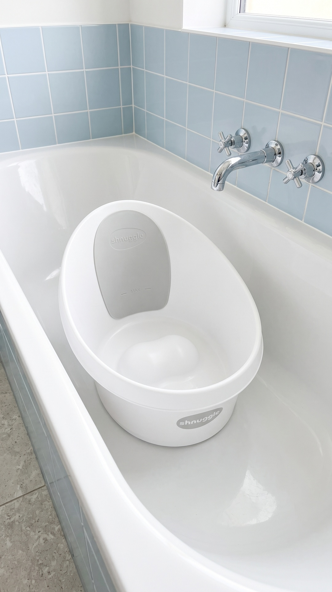
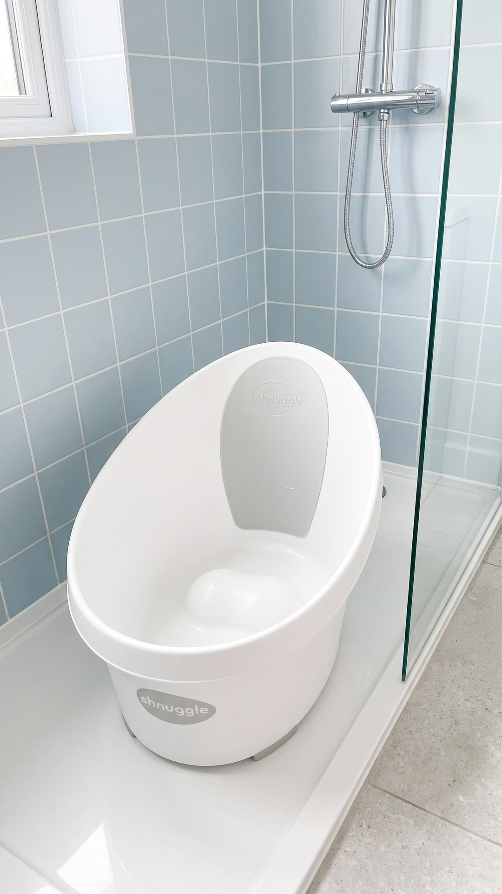
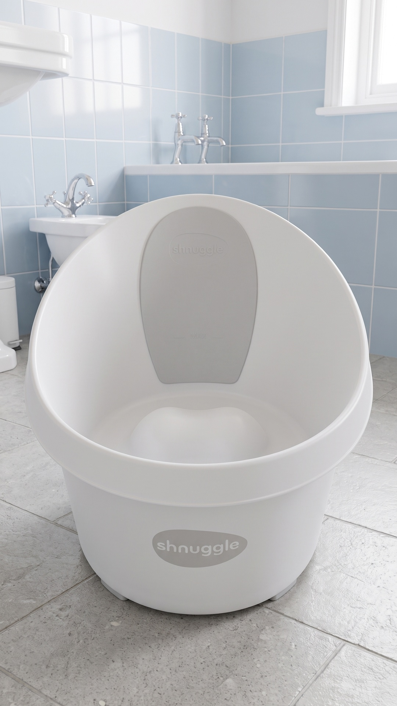
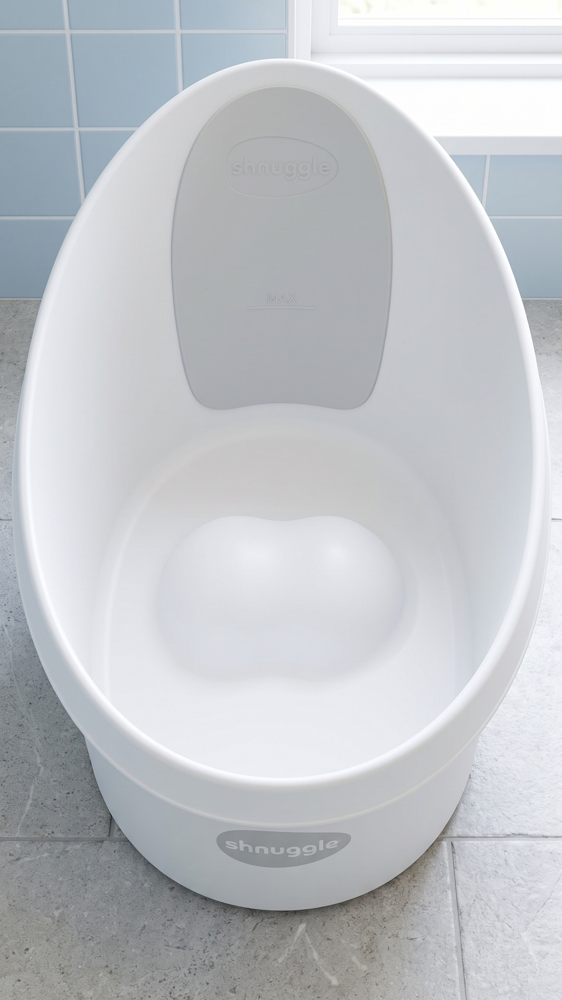
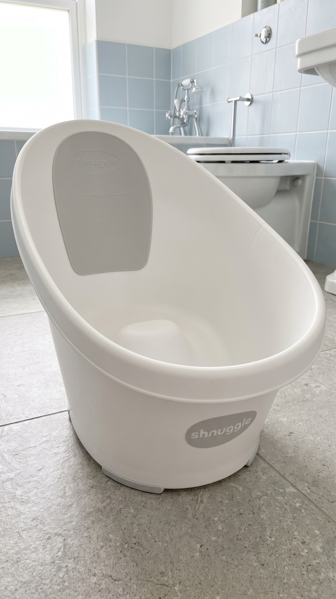
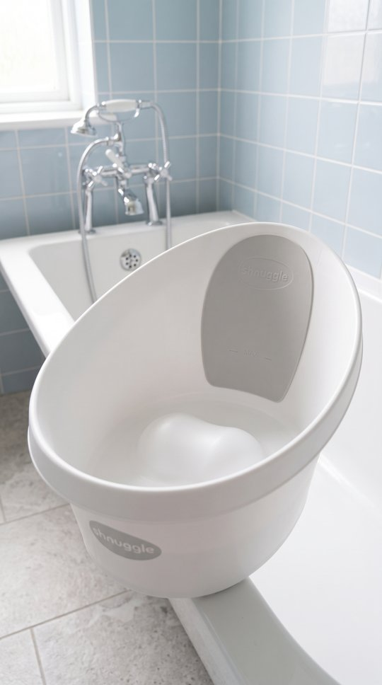
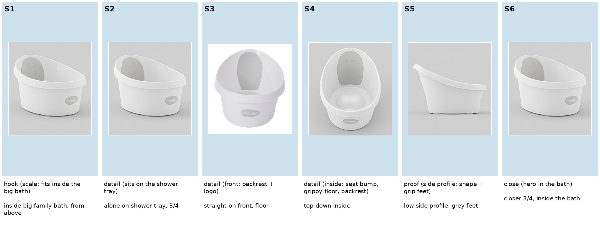
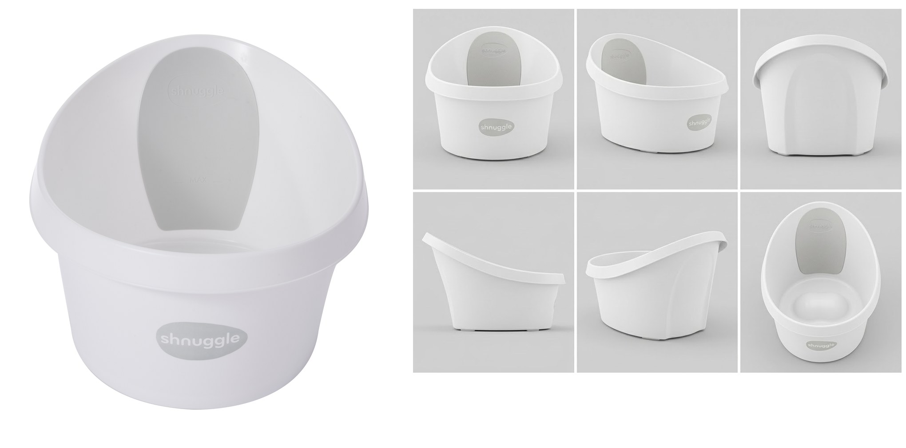

<title>Shnuggle Slideshow Review</title>
<meta name="claude:viewport-fit-sides" content="cover">
<link rel="stylesheet" href="https://fonts.googleapis.com/css2?family=Fraunces:opsz,wght@9..144,600&family=Karla:wght@400;600&display=swap">
<style>
/* Layout: single phone-first column, newest round on top, slides as a swipe row */
:root{
  --bg:#f4f8fb; --surface:#ffffff; --fg:#1d2a33; --muted:#5b6b76; --line:#d6e2ea; --accent:#3f7fa6; --warn:#a4561d;
  --display:"Fraunces",Georgia,serif; --body:"Karla",system-ui,sans-serif;
}
@media (prefers-color-scheme:dark){:root:not([data-theme="light"]){--bg:#121a20;--surface:#1a252d;--fg:#e4edf2;--muted:#9fb1bd;--line:#2b3a44;--accent:#7fb6d8;--warn:#e4a26a;color-scheme:dark}}
:root[data-theme="dark"]{--bg:#121a20;--surface:#1a252d;--fg:#e4edf2;--muted:#9fb1bd;--line:#2b3a44;--accent:#7fb6d8;--warn:#e4a26a;color-scheme:dark}
body{background:var(--bg);color:var(--fg);font:16px/1.55 var(--body);padding-left:max(16px,env(safe-area-inset-left,0px));padding-right:max(16px,env(safe-area-inset-right,0px));padding-block:20px 48px}
main{max-width:860px;margin:0 auto;display:grid;gap:28px}
h1{font:600 clamp(26px,5vw,36px)/1.15 var(--display);margin:0;text-wrap:balance}
h2{font:600 21px/1.25 var(--display);margin:0 0 10px;text-wrap:balance}
.kicker{font-size:12px;letter-spacing:.08em;text-transform:uppercase;color:var(--muted);margin:0 0 6px}
p{margin:0 0 10px;max-width:65ch}
section{display:grid;gap:10px}
.status{border-left:4px solid var(--warn);background:var(--surface);padding:12px 14px;border-radius:6px}
.status strong{color:var(--warn)}
.wide{overflow-x:auto;border:1px solid var(--line);border-radius:8px;background:var(--surface)}
.wide img{display:block;max-width:none;height:auto;width:860px}
@media (max-width:600px){.wide img{width:720px}}
table{border-collapse:collapse;width:100%;font-size:15px}
td,th{text-align:left;padding:8px 10px;border-bottom:1px solid var(--line);vertical-align:top}
th{font-size:12px;letter-spacing:.06em;text-transform:uppercase;color:var(--muted);font-weight:600}
.cap{background:var(--surface);border:1px solid var(--line);border-radius:8px;padding:12px 14px}
.cap b{color:var(--accent)}
ul{margin:0;padding-left:20px;display:grid;gap:4px}
.swipe{display:flex;gap:12px;overflow-x:auto;scroll-snap-type:x mandatory;padding-bottom:8px}
.swipe figure{flex:0 0 min(78%,300px);margin:0;scroll-snap-align:start;display:grid;gap:6px}
.swipe img{width:100%;aspect-ratio:9/16;object-fit:cover;border-radius:10px;border:1px solid var(--line);background:var(--surface)}
.swipe figcaption{font-size:13px;color:var(--muted)}
.swipe .rejected img{opacity:.55}
.swipe .rejected figcaption{color:var(--warn)}
img{max-width:100%}
</style>
<main>
  <header>
    <p class="kicker">Grace · TikTok Shop photo slideshow · test 1</p>
    <h1>Shnuggle Toddler Bath slideshow</h1>
  </header>

  <section class="status">
    <p><strong>Free version (2026-10-20), $0.</strong> No AI. Option 2 = Shnuggle's own photos; option 3 = the real tub photo placed into a free real bathroom photo (Unsplash licence, free for commercial use), sized from the maker's drawing (49 cm wide, 54 cm tall at the back) using the floor tiles. The paid round 2 below was cancelled.</p>
  </section>

  <section>
    <h2>Free slides, in posting order</h2>
    <p>1 is Shnuggle's in-bath photo (it has bath water and bubbles in it, as Shnuggle shot it). 2 is the real tub placed on a real bathroom floor (option 3): the size and edges check out at 2x, but up close it can still read as added in. 3 is Shnuggle's in-shower photo. 4 is Shnuggle's own front photo on a plain background.</p>
    <div class="swipe">
      <figure><figcaption>1 · Hook: fits in the bath (brand photo)</figcaption></figure>
      <figure><figcaption>2 · On the floor (real tub, placed in)</figcaption></figure>
      <figure><figcaption>3 · In the shower (brand photo)</figcaption></figure>
      <figure><figcaption>4 · Front and logo (brand photo)</figcaption></figure>
    </div>
  </section>

  <section class="status">
    <p><strong>Round 2 (cancelled): true size.</strong> Ralph: the tub looks too big and tall. Shnuggle's own drawing says 68 cm long, 49 cm wide, 39 cm tall at the front and 54 cm at the back (about knee height). Plan: remake all 6 with those numbers, a real photo of the tub in a real bath as the size reference, and the camera at standing height. Slide 3 first ($0.09), then the other 5 ($0.45). Round 2 total $0.54; job total $1.08 (Kie balance $3.65).</p>
  </section>

  <section>
    <h2>Round 1 slides, in posting order</h2>
    <p>Swipe sideways. No text. The tub is copied from the real photo, with a smooth inside (no dots or holes), and nothing added. Two tiny ® marks the AI drew next to the logo on slides 4 and 5 were painted out for free.</p>
    <div class="swipe">
      <figure><figcaption>1 · Hook</figcaption></figure>
      <figure><figcaption>2 · Shower tray</figcaption></figure>
      <figure><figcaption>3 · Front</figcaption></figure>
      <figure><figcaption>4 · Inside</figcaption></figure>
      <figure><figcaption>5 · Grip feet</figcaption></figure>
      <figure class="rejected"><figcaption>6 · Rejected: on the bath edge</figcaption></figure>
    </div>
  </section>

  <section>
    <h2>Plan: 6 slides, no text</h2>
    <p>Each panel shows the real view of the tub that slide copies. All slides are set in one new bathroom (pale blue tiles), different from the R1 and R2 rooms.</p>
    <div class="wide"></div>
  </section>

  <section>
    <h2>Product reference (passed on every slide)</h2>
    <p>The real front photo on the left and the six real views on the right. The tub is shown alone, empty and dry. Nothing is added to it or around it: no plug, no water, no toys, no towel, no hands and no text.</p>
    <div class="wide"></div>
  </section>

  <section>
    <h2>Slide order</h2>
    <div class="wide" style="overflow-x:auto">
    <table>
      <tr><th>Slide</th><th>Job</th><th>What it shows</th></tr>
      <tr><td>S1</td><td>Hook</td><td>Tub standing inside an empty family bath, from above, so you see how much smaller it is</td></tr>
      <tr><td>S2</td><td>Detail</td><td>Tub alone on a walk-in shower tray</td></tr>
      <tr><td>S3</td><td>Detail</td><td>Straight-on front: grey backrest and logo badge</td></tr>
      <tr><td>S4</td><td>Detail</td><td>Looking down inside: smooth seat bump and backrest (no dots or holes)</td></tr>
      <tr><td>S5</td><td>Proof</td><td>Three-quarter view showing the grey grip feet</td></tr>
      <tr><td>S6</td><td>Close</td><td>Closer three-quarter view inside the family bath</td></tr>
    </table>
    </div>
  </section>

  <section>
    <h2>Caption (Ralph picked A)</h2>
    <div class="cap"><p><b>A, chosen (hook H066)</b></p><p>This is such a specific problem, but if you have it, you know. Your toddler outgrew the baby tub and the big bath still feels way too big. This one sits right in the shower or the family bath. It has a soft foam backrest and a grippy inside so they stay put. It's in the orange cart.</p></div>
    <div class="cap"><p><b>B (hook H046)</b></p><p>This stays in my shower for a reason. It sits right on the shower tray and needs way less water than filling the big bath. The foam backrest is soft to lean on, and the inside is grippy. It's in the orange cart.</p></div>
    <p>Reading grade 3.4 (A) and 2.9 (B). Humanizer: clean. Hashtags: #toddlerbath #toddlermom #momfinds #tiktokshop. Grace adds the music in the app from TikTok's Commercial Music Library.</p>
  </section>

  <section>
    <h2>Research</h2>
    <ul>
      <li>Photo slideshows are rare in this niche: 2 of 307 posts on #toddlerbath and #toddlerbathtub, and neither was a shop post. Little competition, but also no proven slideshow to copy.</li>
      <li>Today's viral board (65 home and baby shop videos) had no toddler bath in its top 20.</li>
      <li>Script gate: GATE OK.</li>
    </ul>
  </section>
</main>
